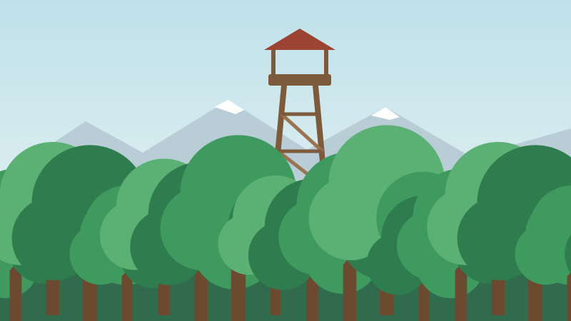

Freizeit & Tourismus
Seeufer, Aarenwald und ein lebendiges Dorfleben: Entdecken Sie Musterwil zu jeder Jahreszeit.


Angebote in Musterwil
Sport und Baden
Strandbad Seeufer
Liegewiese, Sprungturm und Kinderbecken. Geöffnet von Mitte Mai bis Mitte September, bei schönem Wetter 9 bis 20 Uhr.
Sport und Baden
Vita-Parcours Aarenwald
2,8 km mit 15 Posten. Start beim Parkplatz Waldhaus.
Kultur
Open Air Kino am See
Jeden Freitag im Juli und August zeigt der Kulturverein einen Film unter freiem Himmel. Eintritt frei, Kollekte.
Kultur
Dorfmuseum im Spycher
Handwerk und Dorfgeschichte, geöffnet am ersten Sonntag im Monat von 14 bis 17 Uhr.
Natur
Waldlehrpfad
4,5 km mit 20 Infotafeln zu Bäumen, Tieren und Pilzen. Kinderwagentauglich.
Kurse
Workshop Velo-Reparatur
Das Werkhof-Team gibt sein Know-how weiter: Schlauch flicken, Bremsen einstellen, Kette ölen. Samstag, 7. November 2026, 9 bis 12 Uhr.
Ausflugstipp

Vom Dorfplatz erreichen Sie den Aussichtsturm Hohwacht in rund 40 Minuten zu Fuss. Bei klarer Sicht reicht der Blick bis zu den Alpen.
Zurück geht es bequem mit dem Kursschiff: Das Billett für die Seerundfahrt erhalten Sie am Kiosk beim Steg, wo es im Sommer auch Glace und kühle Getränke gibt.
Dorfführungen für Gruppen organisieren wir auch ad hoc – melden Sie sich einfach bei der Gemeindeverwaltung.